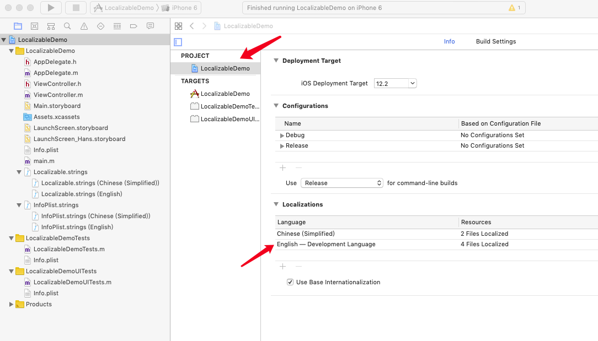
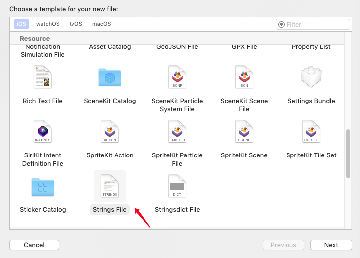
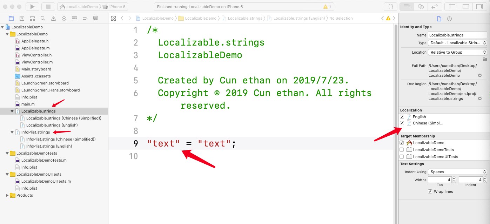
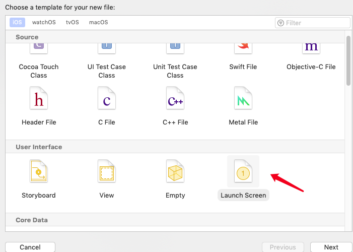
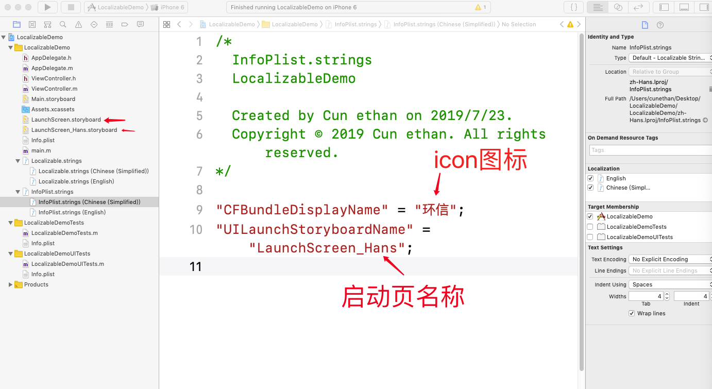

iOS国际化
1. 设置项目支持语言Localizations
project -> Info -> Localizations 添加语言
如下图:
2. 普通组件国际化
新建Localizable.strings文件 -> 点击Localize -> 在Localization开面设置支持的语言
如下图:
 使用：NSLocalizedString(key, key对应的注释)
lab.text = NSLocalizedString(@"text", @"这是注释说明");
3. LaunchScreen国际化
新建launchscreen_Hans.storyboard文件,对应中文下的启动页，多语言下对立建立多个 ->
新建InfoPlist文件 -> 点击Localize -> 在Localization开面设置支持的语言
在对应的.storyboard文件里设置，如：
中文： "UILaunchStoryboardName" = "LaunchScreen_Hans";
英文： "UILaunchStoryboardName" = "LaunchScreen";
如下图:
 4. icon图标国际化
如LaunchScreen一样，在新建InfoPlist.strings添加：
中文: "CFBundleDisplayName" = "环信";
英文: "CFBundleDisplayName" = "huanxin";